PART 4: IMAGE ADJUSTMENTS
Using the Display Adjustment Window
Many of the adjustment you will want to make to your images can be done within the Display Adjustment Window.
The Display Adjustment is a free floating window in the Imaris interface that you can move to any location. It usually opens by default when Imaris is launched. If the previous user has closed the window you may need to re-open it by going to Edit -> Show Display Adjustment Window.
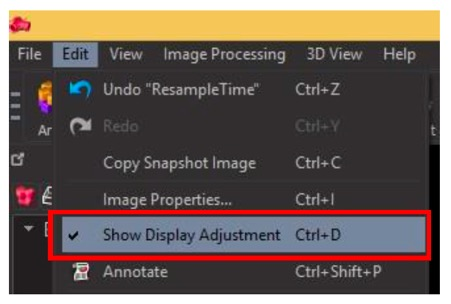
Click on a channel (anywhere in the coloured box) to make it the active channel in the window. The active channel with have a yellow boarder.
You can turn channels on or off in the image, without deleting them completely, using the check boxes next to the channels in the Display Adjustment window.
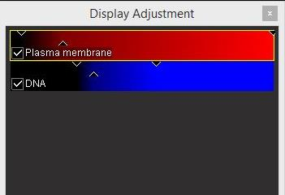
By double clicking on the channel name in the window you can open the Image Properties. You can also access this from Edit -> Image Properties… (or use shortcut Ctrl + I).
Under Image Properties you can select the different channels on the left hand panel and assign different LUTs to the channel, or assign a name (ie: from channel 1 to DAPI).
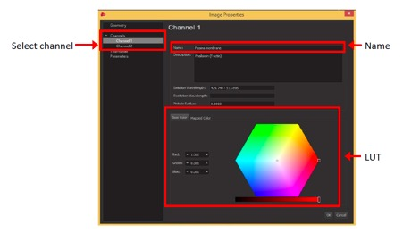
Under Advanced in the Display Adjustment panel you can find options for adjusting the brightness and contrast and the gamma. These are outlined in more details below.
Adjusting Brightness and Contrast
You can adjust the brightness and contrast on an image using the sliders in the channel boxes.
You can also adjust the brightness and contrast for the “active” channel or by adjusting the histogram under Advanced options in the Display Adjustment window.
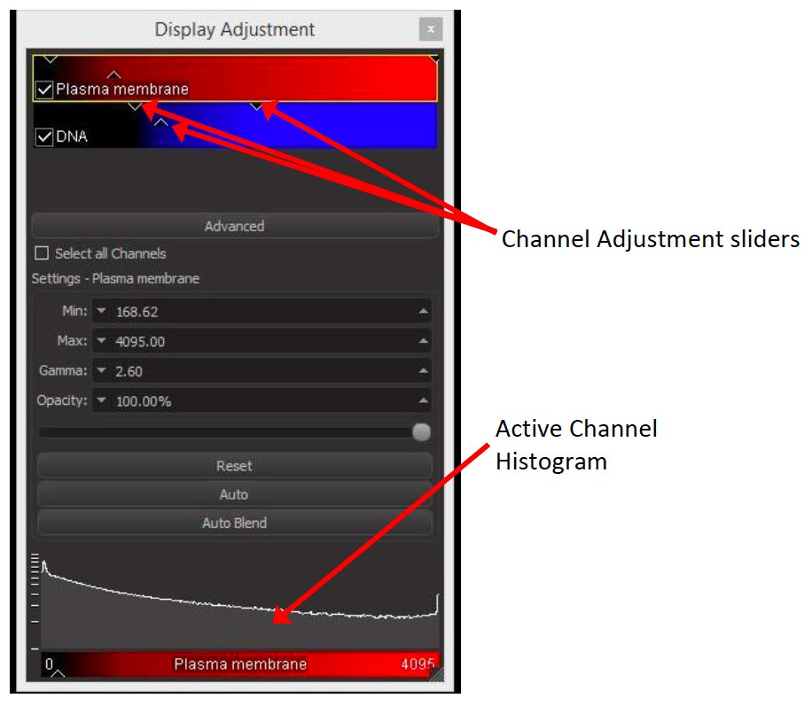You can use the Reset button at any time to return to the original brightness and contrast settings. Use the Auto button to allow the software to automatically adjust the brightness and contrast.
Gamma Adjustments
To change the Gamma on the active channel, use the up and down arrows in the Gamma box in Advanced options under the Display Adjustment window to increase or decrease the gamma value.
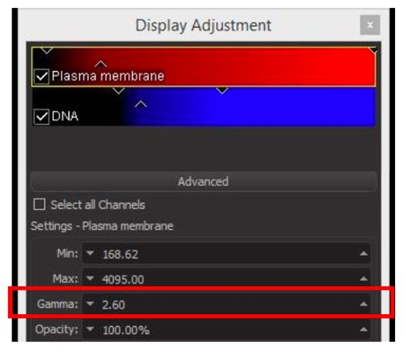
You can also type values directly into the gamma box.
Use gamma adjustments with caution as this is a non-linear adjustment to your image. Gamma adjustments can skew quantification and any non-linear adjustments to images are not permitted in published journal articles.
Cropping Images
To crop images in Imaris go to Edit -> Crop 3D… (or use shortcut Ctrl + W).
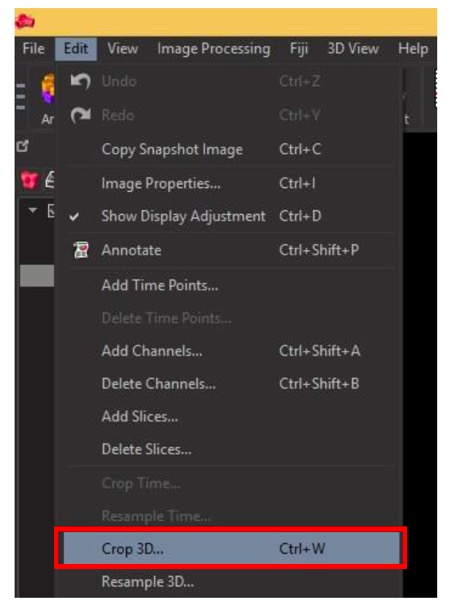
The crop window displays your image in xy, yz and xz. Adjust the yellow bounding boxes in each image, or type values directly into the Crop Dimensions boxes to crop in all 3 dimensions. Select OK to apply the changes.
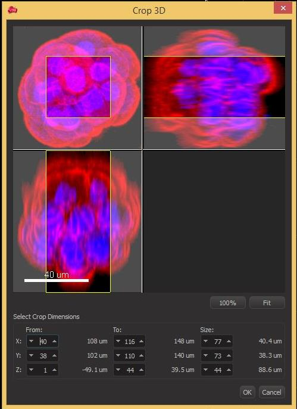
To crop a 2D image in Imaris, use the same Crop 3D… tool. Only a single xy image will open in the crop window. Adjust the bounding box and apply changes in the same manner as a 3D image.
Resizing and Resampling
Images in Imaris can be resized by “resampling” the pixel information within the image. To resample your image go to Edit -> Resample 3D….
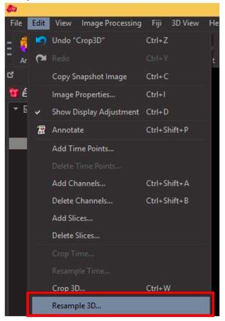
In the Resample 3D window use the up and down arrows to adjust the pixel size for the x, y and z dimensions. You can also type values directly into the boxes.
The x and y dimensions will usually come up as fixed ratio by default. To maintain the ratio with the z dimension as well check the box next to Fixed Ratio X/Y/Z.
When one of these boxes is checked, changing the value for one dimension will adjust the corresponding dimension(s) accordingly.
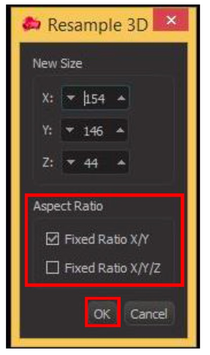
Click OK to apply the changes to your image.
Editing Time Series
You can add multiple time series files together using the Add Time Points… function. To do this go to Edit -> Add Time Points….
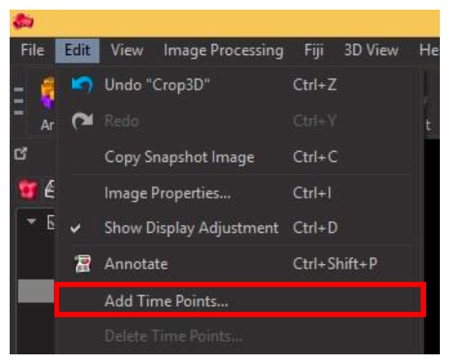
The same as adding channels or z-sections, from the explorer window select the file you want to add on to your time series and click Open.
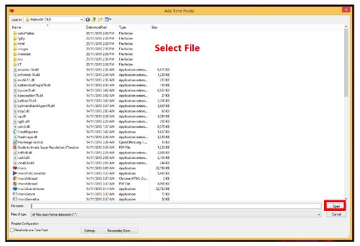
Repeat this for any additional files you want to combine, ensure you add them in the correct time order.
You can also delete time points from a series by going to Edit -> Delete Time Points…. (as above) In the resulting window, enter the time points you want to delete from the series and click OK.
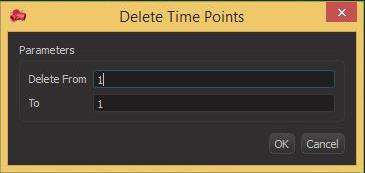
Similar to this is the Crop Time function. This is also found under the Edit menu.
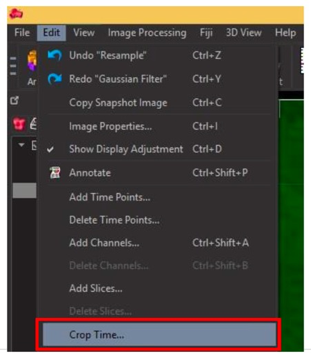
Under the Crop Time window enter in the first and last time points you want to keep and click OK. Imaris will discard any time points before and after the numbers you have entered.
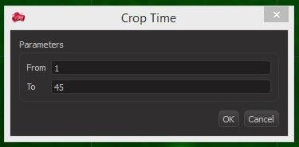
The last way of editing your time series is using Resample Time. This allows you to reduce the total number of time points by removing frames at set intervals. Find this under the Edit menu as well.
In the Resample Time window enter new number of frames you want to have in your time series. This number should be divisible by the total number of frames to ensure even resampling. Click OK to apply the change to your time series.
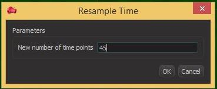